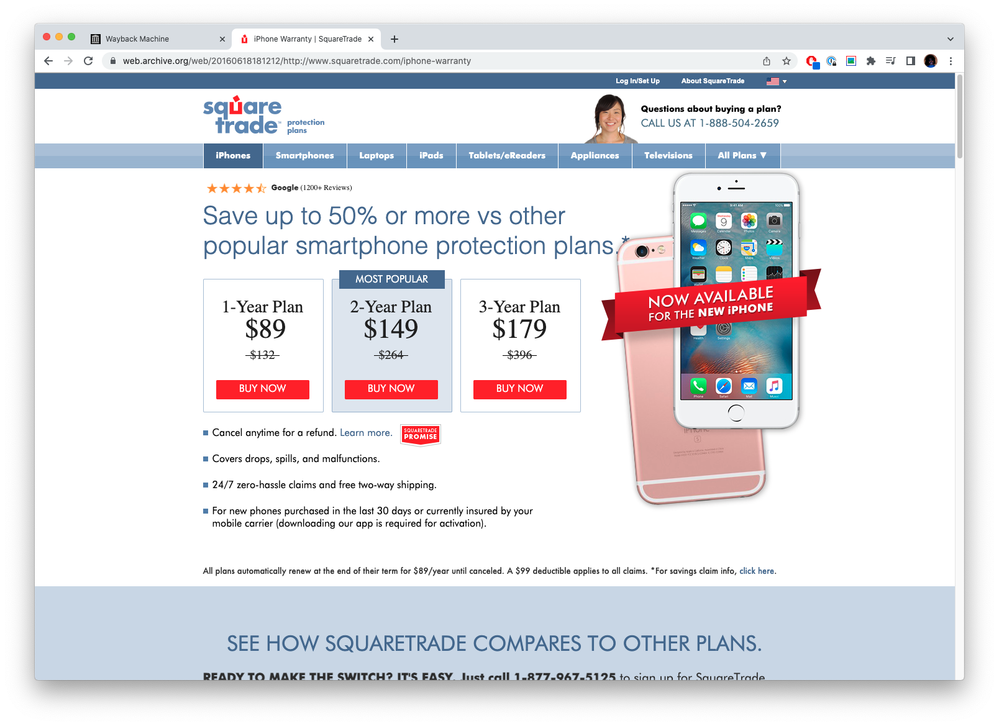
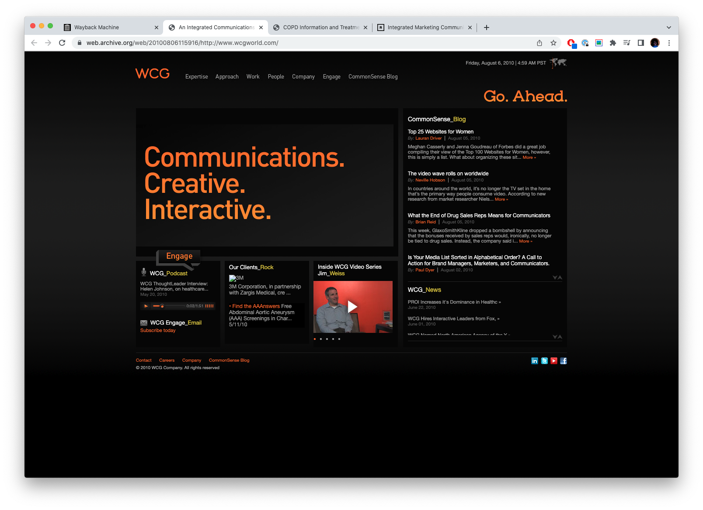
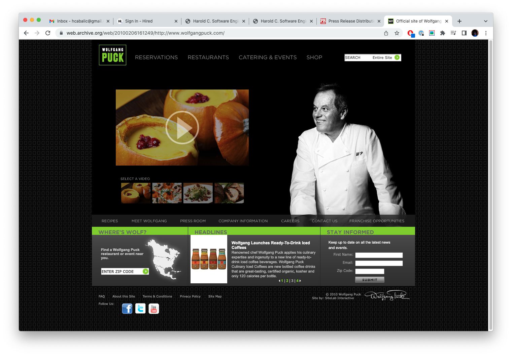
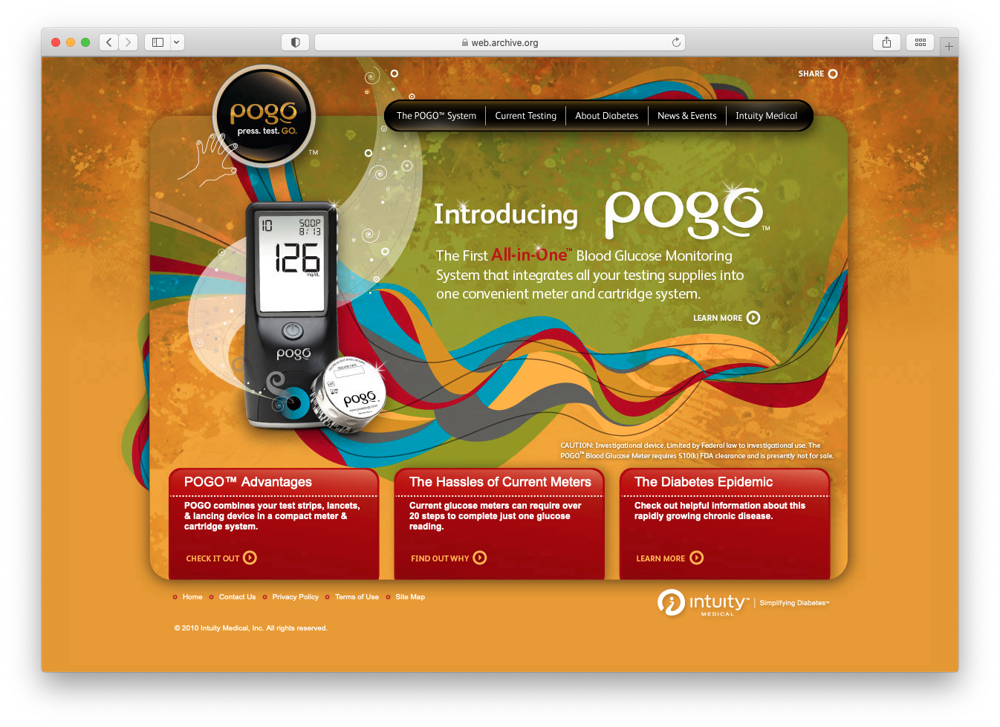
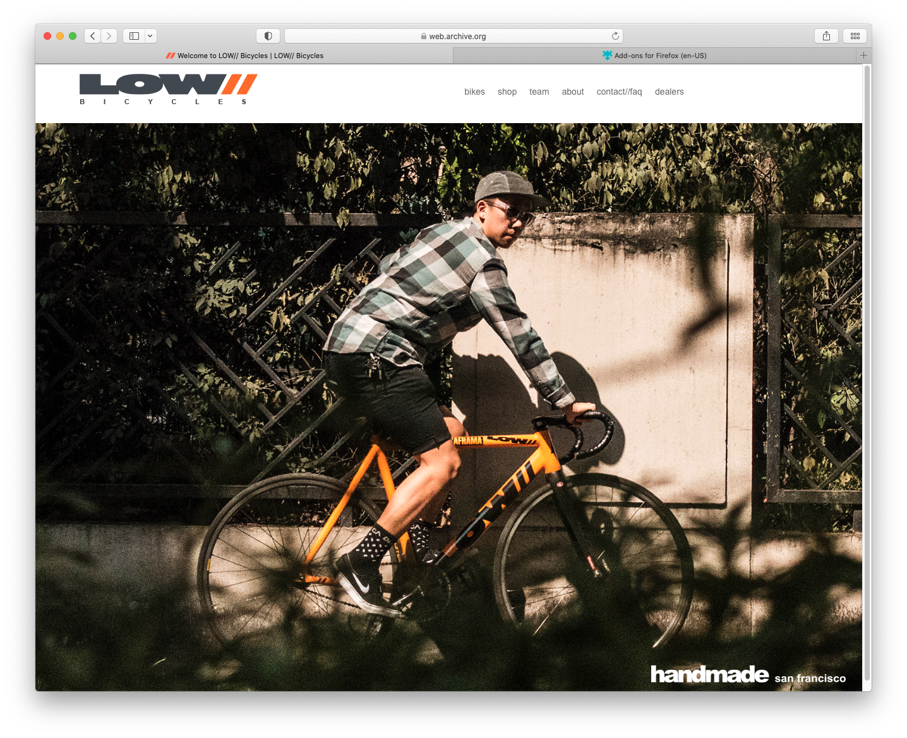
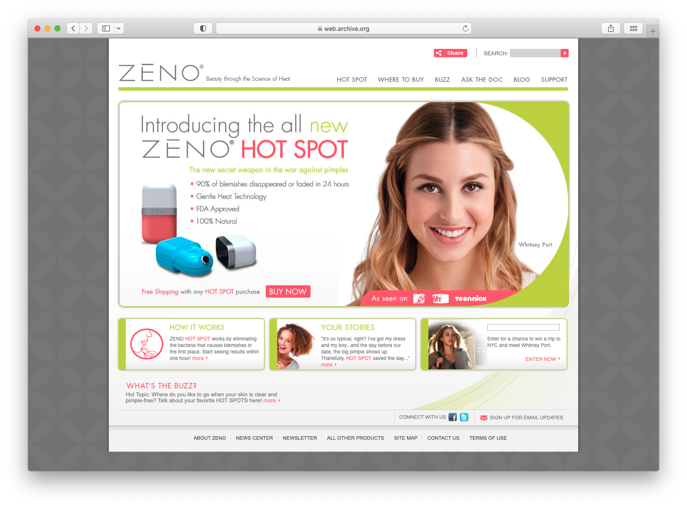
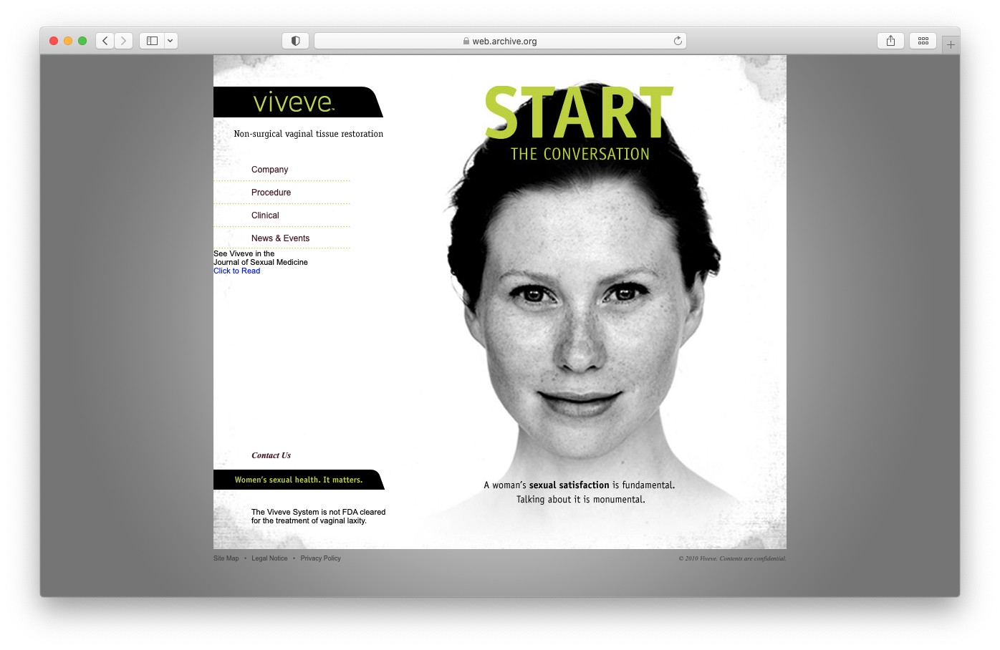
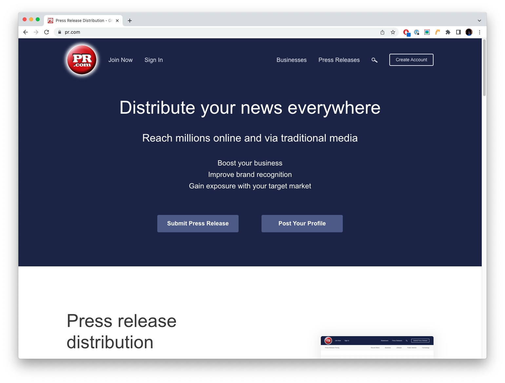

Harold Cabalic
Software EngineerHi, my name is Harold and I am a Software Engineer with experience in front-end since 2007. I joined Pinterest in my most recent role from 2020-2023 as a backend Software Engineer working in distributed systems, while still having the opportunity to contribute on special internal front-end projects. For my next role, I'm looking to step up to Senior level in front-end. I'm highly confident in my ability to take a design and implement it in re-usable & efficient code, and I've been a reliable contributor to organizations throughout my career.
Selected Works
A collection of full website builds in which I was the primary, and often times sole developer. These projects spanned a variety of tech stacks.
These examples are just website snapshots using Wayback Machine.
SquareTrade
A third-party protection plan company for which I worked for from 2011-2017. As their first front-end software engineer, I had contributed heavily to full website redesigns. This snapshot is an iPhone product page as part of SquareTrade's rebrand. Additionally, I had developed SquareTrade's first mobile website (m.squaretrade.com) as well as a handful of their international subdomains (AT, DK, FI).
WCG (WeissComm Group)
The first project I built over a two-week period at my first agency job in San Francisco. WCG (WeissComm Group) is now "Real Chemistry".
Wolfgang Puck
One of the first significant builds that I had been assigned very early in my career - restaurant & recipe website for renowned chef Wolfgang Puck. Also developed microsite for Puck's line of soups, wolfgangpucksoups.com.
Press Pogo (Intuity Medical)
A full website build that is memorable for me mostly because of how intricate its design was and how much attention to detail that was needed just for the main dropdown menu.
LOW// Bicycles
Handmade aluminum bicycle framebuilder based in San Francisco, CA. I approached Andrew Low with the hopes of contributing in any way to the SF bicycle scene and my love for cycling in general. Originally a static website; I re-implemented/upgraded it with Drupal CMS.
MyZeno (MTV)
Full website build for MyZeno (MTV), a device for 'zapping' pimples.
Viveve
Full website build for Viveve, a device for women.
PR.com
Full website website redesign implementation. Note: I really tried to convince them that they needed a hero image.